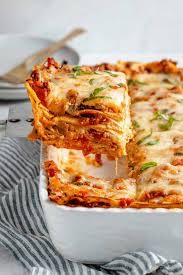

Lasagna

Lasagna is the name of one of the oldest and best-known pasta shapes. It
is usually rectangular or ribbon shaped, thicker than tagliatelle, made
from a dough based on flour and eggs, with numerous local variants.
After being boiled, the rectangular lasagna noodles are drained and placed
in layers with a filling that varies based on different local traditions.
Ingredients
- 1 pound sweet Italian sausage
- ¾ pound lean ground beef
- ½ cup minced onion
- 2 cloves garlic, crushed
- 1 (28 ounce) can crushed tomatoes
- 2 (6 ounce) cans tomato paste
Steps
- Cook Sausage
- Ground Beef
- Cook lasagna noodles in boiling water
- Preheat oven to 375 degrees F
- Arrange 6 noodles lengthwise over meat
- Bake in preheated oven for 25 minutes
- Cool for 15 minutes before serving